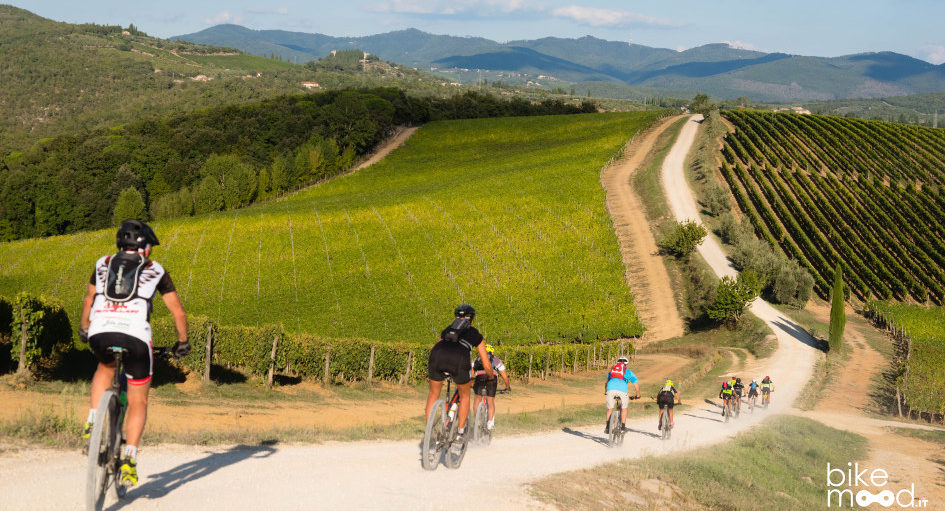

Tour in Bicicletta!
Vieni a visitare insieme ai nostri addetti i paesaggi da moziafiato con le nuove E-Bike!!
Home
Camere
Degustazioni

Portai visitare insieme a noi:
- PIENZA: è un comune italiano di 2 076 abitanti della provincia di Siena in Toscana.
Situato in Val d'Orcia, non è molto distante dalla strada statale Cassia e dagli altri due importanti centri della valle, San Quirico d'Orcia e Castiglione d'Orcia. Il centro storico è stato dichiarato dall'UNESCO patrimonio dell'umanità nel 1996.

- MONTICCHIELLO: è una frazione del comune italiano di Pienza, nella provincia di Siena, in Toscana.È un tipico borgo medioevale immerso nella campagna senese. Monticchiello sorge a 500 metri sul livello del mare e al 2011 vi risiedevano 202 abitanti.
- MONTALCINO: è un comune italiano di 5 920 abitanti della provincia di Siena in Toscana. Per estensione territoriale, risulta essere il comune più grande della provincia. È una località nota per la produzione del vino Brunello. Si colloca nel territorio a nord-ovest del Monte Amiata, alla fine della val d'Orcia, sul confine amministrativo con la provincia di Grosseto.
- MONTEPULCIANO: è un comune italiano di 13 673 abitanti della provincia di Siena in Toscana. Il comune è posto a 605 metri sul livello del mare, a cavallo tra la Valdichiana e la Val d'Orcia.Di antica e lunga storia, Montepulciano ha origini dal popolo degli Etruschi a partire dal IV secolo a.C.Ha notorietà anche per la ricchezza di ottimi vigneti, dai quali si ricava il Vino Nobile di Montepulciano DOCG.
Termini e condizioni d'uso